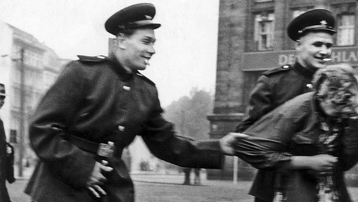
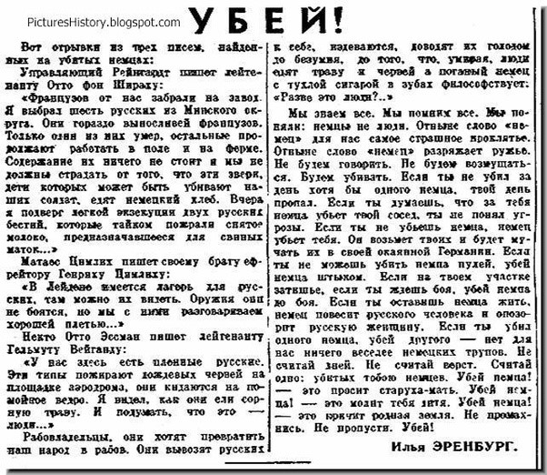

Chuyện gì đã xảy ra tại Berlin ngay sau khi thành phố thất thủ trong chiến tranh thế giới thứ 2?
Q: Chuyện gì đã xảy ra tại Berlin ngay sau khi thành phố thất thủ trong
chiến tranh thế giới thứ 2?
A: Nick Pehar, cựu luật sư tại Australia Public Service. (4.9k upvotes)
Hiếp, vũ khí hóa cưỡng hiếp (Weaponised rape), cưỡng hiếp trên diện rộng.Một số lượng khổng lồ những người phụ nữ Đức đã bị hiếp bởi Hồng Quân Liên Xô. Nhiều điều kinh khủng có thể đã xảy ra nhưng ám ảnh kinh hoàng nhất chính là đây.
“Thống kê từ 2 bệnh viện chính của thành phố cho thấy số lượng nạn nhân nằm trong khoảng từ 95,000 đến 130,000 người. Một bác sĩ chỉ ra rằng trong khoảng 100,000 nạn nhân có 10,000 người đã chết, hầu hết là do tự tử. Số lượng người chết được cho là cao hơn nhiều so với con số 1.4 triệu nạn nhân tại phía Đông Prussia, Pomerania và Silesia. Tổng số nạn nhân có lẽ lên tới 2 triệu người và đa số đã phải chịu đựng hàng loạt chứ không phải một vụ cưỡng hiếp.”
Zakhar Agranenko, nguyên thủy quân lục chiến tại phía Đông Prussia đã viết trong nhật kí rằng: “Lính Hồng Quân không tin vào việc quan hệ cá nhân với những phụ nữ Đức. Luôn có chín, mười, mười hai lính cùng một lúc, họ hiếp dâm tập thể.”
Nhà văn Vasily Grossman – một giao liên cho Hồng Quân sớm phát hiện ra rằng không chỉ có phụ nữ Đức mà còn có phụ nữ Hà Lan và cả những cô gái Nga trẻ, phụ nữ Belarus và cả Ukraina – những người bị trả lại Đức bởi Wehrmacht để làm công nhân nô lệ cũng là nạn nhân. Ông từng viết rằng: “Những cô gái Sô VIết giải phóng thường phàn nàn rằng họ đã bị lính của chúng tôi cưỡng hiếp.”
Hồng Quân cưỡng hiếp cả những đồng minh của họ, một ví dụ là sau cuộc giải phóng Belgrade vào năm 1994, phó chủ tịch của Marsha Tito – Milovan Djilas phàn nàn với Stalin về chuyện đó, Stalin nói với ông ta rằng “Mọi người nên hiểu rằng khi một người lính vượt qua hàng ngàn cây số của máu me lửa đạn và chết chóc,những việc như vui vẻ với phụ nữ nên được bỏ qua.”
Trong cuốn sách “ Cuộc đối thoại với Stalin”, Djilas sau đó có viết “Theo như những lời phàn nàn của người dân chỉ tính riêng vùng Đông Bắc Yugoslavia đã có 121 vụ cưỡng hiếp trong đó 111 vụ bao gồm cả giết người, và 1,204 vụ cướp giết . Những con số đã thể hiện rằng tại sao người lãnh đạo của Yugoslavia phải xem xét vụ việc này như một vấn đề về chính trị và hơn thế nữa một vấn đề quốc nội cần được giải quyết.”
Ilya Ehrenburg một nhà văn và phóng viên Sô Viết đã đổ lỗi cho rất nhiều thứ khi sự việc này diễn ra. Năm 1942, trong tiêu đề tờ Red Star “Giết” ông ta đã viết:
“Người Đức không được xem như một giống người…”
“… không có điều gì tiêu khiển đối với chúng ta hơn là một xác chết Đức.”
“Còn đối với những người phụ nữ Đức, họ chỉ khơi dậy trong chúng ta cảm xúc duy nhất: kinh tởm. Chúng ta khinh thường những người phụ nữ đó từ chính việc họ là mẹ, là chị là vợ của những tên đao phủ. Chúng ta khinh thường những người phụ nữ ấy bởi những bức thư họ viết cho đứa con trai, người chồng, người anh trai của họ. ‘Mẹ gửi cho con một cái áo khoác đấy nhé!’. Chúng ta khinh thường họ bới họ chỉ là những tên cướp và con đĩ điếm.”
Đoạn văn trên được trích trong một cuốn sách của ông Vojna (Cuộc Chiến), Moscow, 1942-43.
Tuy vậy, khi mở chiếc hộp của Pandora, Ehrenburg còn có những suy nghĩ khác. Vào năm 1945, sau khi tin tức tội ác của cuộc chiến và những cuộc cưỡng hiếp quy mô lớn ở phía Đông Prussia truyền đến Moscow, Ehrenburg đã có một chuyến đi đến đây. Khi trở về ông đã phát biểu tại Frunze Military Academy và chỉ trích các sĩ quan Hồng Quân vì huấn luyện lính của mình một nhân cách và tư tưởng chính trị nghèo nàn và thiếu các biện pháp nghiêm ngặt ngăn chặn nạn cướp hiếp và cướp bóc.
Mặc dù vậy, Ehrenburg vẫn vướng vào những chỉ trích công khai và bị phê phán bởi Georgy Alexandrov trong Pravda ngày 14 tháng 4 năm 1945. Sau đó, ông đã viết một bức thư giải thích với Stalin rằng ông ta không có ý nói đến toàn bộ những người phụ nữ Đức mà chỉ những người Đức xâm lược thôi.